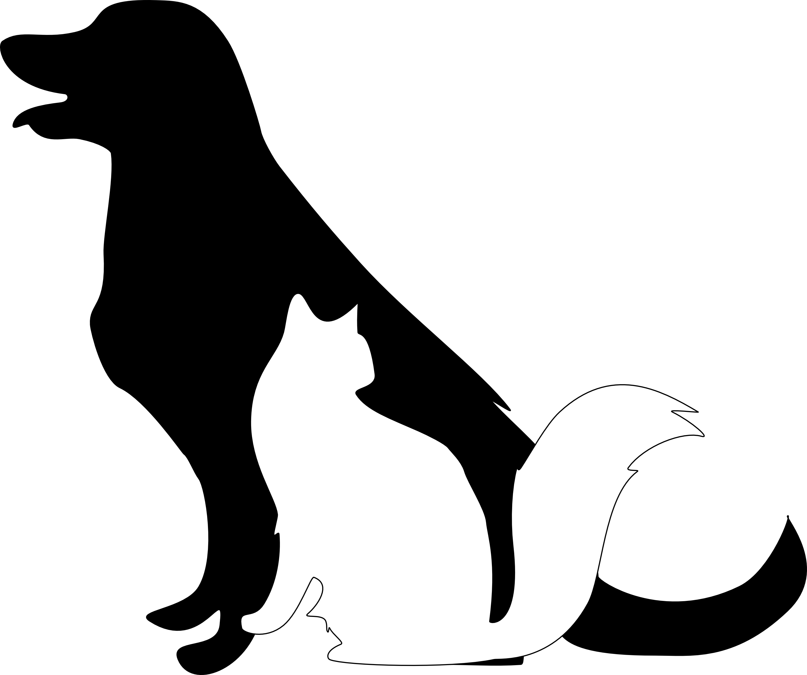

Great and Small Veterinary Services
1212 Apache Crescent, Leduc, AB T9E 8T8
(780) 387-4848
Wellness Exams
- Whole Body Exam
- Checking for lumps and bumps
- Vitals Check:
- heartbeat/pulse
- respiration
- temperature
- mucous membrane colour
- capillary refill time
- Blood Check
- routine vaccines/titer test
Surgeries & Dentistries
- teeth cleaning
- spay/neuter/alternative
- Cesarean section
- Organ removal (ruptured, etc)
- Organ fixing (resection, etc)
- biopsy
Emergency & Critical Care
- bone setting
- wound management
- infection management
Exotics
- foxes
- rabbits
- hedgehogs
- ferrets
- reptiles
- fish
Diagnostic Imaging
- Radiographs
- Ultrasound
- Magnetic Resonance Imaging (MRI)
- Computed Tomography
- Endoscopies
Internal Medicine
immunotherapy
endoscopy
cystoscopy
temporary feeding tube placement
disease treatment & management:
- endocrine
- gastrointestinal
- urinary
Oncology
- radiation treatments
- chemotherapy treatments
Neurology
- testing
- diagnosis
- treatment
- management
Dermatology
- testing
- diagnosis
- treatment
- management
Cardiology
- testing
- diagnosis
- treatment
- management
Referral Center
- Gift Certificates
- 1/2 off exams for a year
- Free routine vaccinations/titers for a year
- Credit stamp card (free product(s) when card is full
- 50% of account balance to charity of your choice when paid
Boarding
- After surgery care
- Daily walks
- Medication schedules
Behaviour Assessment & Training
- Behaviour Assessment
- Behaviour Modification
- Puppy classes
- Canine Good Citizen Training